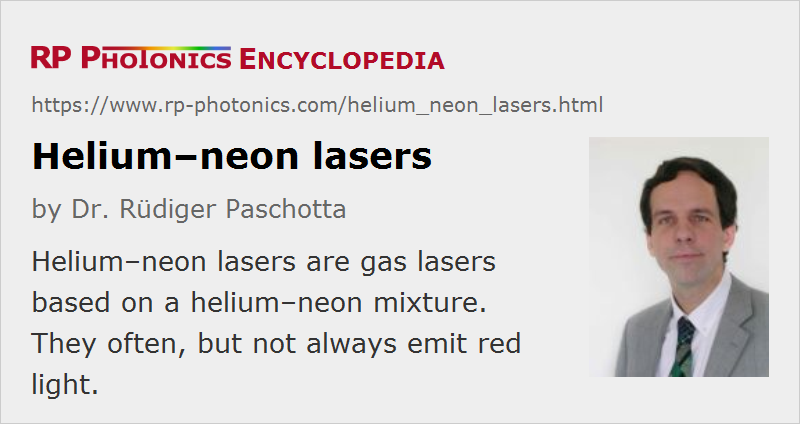

Helium–neon Lasers
Definition: gas lasers based on a helium–neon mixture
More general term: gas lasers
German: Helium-Neon-Laser
How to cite the article; suggest additional literature
Author: Dr. Rüdiger Paschotta
Helium–neon (He–Ne) lasers are a frequently used type of continuously operating gas lasers, most often emitting red light at 632.8 nm at a power level of a few milliwatts and with excellent beam quality. The gain medium is a mixture of helium and neon gas in a glass tube, which normally has a length of the order of 15–50 cm.

A DC current, which is applied via two electrodes with a voltage of the order of 1 kV (but higher during ignition), maintains an electric glow discharge with a moderate current density. In the simplest case, a ballast resistor stabilizes the electric current. The current is e.g. 10 mA, leading to an electrical power of the order of 10 W. The glass tube as shown in Figure 1 has Brewster windows, and the laser mirrors must form a laser resonator with a small round-trip loss of typically below 1%. Due to the polarization-dependent loss at the Brewster windows, a stable linear polarization is obtained.
Some He–Ne lasers have a tube with internal resonator mirrors, which can not be exchanged. Brewster windows are then not required.
In the gas discharge, helium atoms are excited into a metastable state. During collisions, the helium atoms can efficiently transfer energy to neon atoms, which have an excited state with similar excitation energy. Neon atoms have a number of energy levels below that pump level, so that there are several possible laser transitions. The transition at 632.8 nm is the most common, but other transitions allow the operation of such lasers at 1.15 μm, 543.5 nm (green), 594 nm (yellow), 612 nm (orange), or 3.39 μm. The emission wavelength is selected by using resonator mirrors which introduce high enough losses at the wavelengths of all competing transitions.
Due to the narrow gain bandwidth, He–Ne lasers typically exhibit stable single-frequency operation, even though mode hopping is possible in some temperature ranges where two longitudinal resonator modes have similar gain.
Applications
Helium–neon lasers, particularly the standard devices emitting at 632.8 nm, are often used for alignment and in interferometers. They compete with laser diodes, which are more compact and efficient, but have less convenient beam profiles.
Some He–Ne lasers are serving in optical frequency standards. For example, there are methane-stabilized 3.39-μm He–Ne lasers, and 633-nm iodine-stabilized versions.
Suppliers
The RP Photonics Buyer's Guide contains 27 suppliers for helium--neon lasers. Among them:
Questions and Comments from Users
Here you can submit questions and comments. As far as they get accepted by the author, they will appear above this paragraph together with the author’s answer. The author will decide on acceptance based on certain criteria. Essentially, the issue must be of sufficiently broad interest.
Please do not enter personal data here; we would otherwise delete it soon. (See also our privacy declaration.) If you wish to receive personal feedback or consultancy from the author, please contact him e.g. via e-mail.
By submitting the information, you give your consent to the potential publication of your inputs on our website according to our rules. (If you later retract your consent, we will delete those inputs.) As your inputs are first reviewed by the author, they may be published with some delay.
Bibliography
| [1] | A. Javan, W. R. Bennett Jr., and D. R. Herriott, “Population inversion and continuous optical maser oscillation in a gas discharge containing a He–Ne mixture”, Phys. Rev. Lett. 6 (3), 106 (1961), doi:10.1103/PhysRevLett.6.106 |
| [2] | W. R. Bennett, “Background of an inversion: the first gas laser”, J. Sel. Top. Quantum Electron. 6 (6), 869 (2000), doi:10.1109/2944.902136 |
See also: gas lasers, red lasers, visible lasers
and other articles in the category lasers
|  |
If you like this page, please share the link with your friends and colleagues, e.g. via social media: 


These sharing buttons are implemented in a privacy-friendly way! |
2020-04-26
In a He-Ne gas laser, can we use any other gas in place of neon?
Answer from the author:
It is quite possible that the same tube would work with other gas mixtures, if you also exchange the resonator mirrors according to the used laser transition.